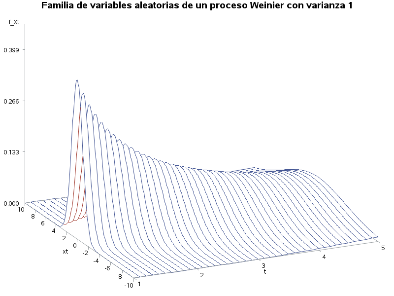
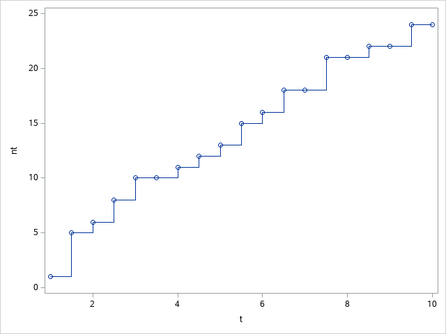

Procesos estocásticos
En esta sección se estudiará a los procesos estocásticos, los cuales pueden ser considerados una generalización de una muestra aleatoria.
El estudio de procesos estocásticos requiere el uso de varios conceptos de probabilidad, por que se recomienda leer la página de Introducción a la probabilidad.
Introducción¶
Un proceso estocástico (o probabilístico) puede considerarse una generalización de una muestra aleatoria, en el sentido de que las variables aleatorias no son necesariamente independientes y su distrbución podría cambiar.
Proceso estocástico
Un proceso estocástico, denotado por \(\lbrace X(t) : t \in T \rbrace\) o por \(\lbrace X_t : t \ge 0 \rbrace\), es una colección de variables aleatorias indizadas con valores en un conjunto \(T\), en donde \(T\) es un conjunto a lo más numerable o un intervalo de números reales en \([0,\infty)\).
De la definición anterior se entiende que las variables dependerán del parámetro \(t\) (usualmente el tiempo) y están ordenadas. Además el conjunto \(T\) puede ser discreto o continuo. Si el conjunto de índices \(T\) es discreto, se le conoce como proceso estocástico de tiempo discreto mientras que si \(T\) es continuo, se le conoce como proceso estocástico de tiempo coninuo. Las variables aleatorias \(X_t\) pueden tomar tanto valores continuos o valores discretos.
Note que si se fija un punto \(t\), se tiene \(X_t\) una variable aleatoria. Una realización del proceso \(X(t)\), es decir si se observa la variable aleatoria, se le conoce como camino muestral y se entiende como el estado del proceso en el tiempo \(t\) (Ross, 1996).
Definiciones¶
Proceso completamente especificado
Se dice que un proceso estocástico \(\lbrace X(t) : t \in T \rbrace\) está completamente especificado si para cualquier valor del tiempo \(t_1<t_2<\dots<t_n\) con \(n \in \mathbb{N}\), la distribución conjunta de \((X_{t_1},X_{t_2},\cdots,X_{t_n})\) es conocida.
De la definición anterior se entiende que es difícil conocer el comportamiento de un proceso estocástico o ley de probabilidad, ya que en general es complicado hallar las distribuciones conjuntas, por lo que en ocasiones se deben imponer ciertas condiciones para su estudio.
Procesos con incrementos independientes
Se dice que un proceso estocástico \(\lbrace X_t : t \ge 0 \rbrace\) tiene incrementos independientes si dados \(t_0,t_1,t2,\dots,t_n\) las variables aleatorias \(X_{t_1}-X_{t_0},X_{t_2}-X_{t_1},\dots,X_{t_n}-X_{t_{n-1}}\) son independientes.
La definición anterior nos asegura que la diferencia de 2 variables aleatorias será independiente de cualquier otra diferencia de 2 variables aleatoria, siempre y cuando sus intervalos no se translapen.
Las variables aleatorias no están ordenadas
No tiene sentido decir que \(X_{t_1}\) es menor que \(X_{t_2}\) ya que las variables aleatorias no están ordenadas.
Procesos con incrementos estacionarios
Se dice que el proceso \(\lbrace X_t : t \in T \rbrace\) tiene incrementos estacionarios si para \(s<t\) la distribución de \(X_t-X_s\) es la misma que \(X_{t+h}-X_{s+h}\), para toda \(h > 0\) y \(s+h,t+h \in T\).
La definición anterior nos indica que la distribución de la diferencia entre cualesquiera 2 diferencias de variables aleatorias de igual longitud es la misma, no importa en qué parte del proceso hayan sido tomadas, sin embargo, esto no necesariamente implica que sean independientes.

El siguiente ejemplo muestra un proceso con incrementos independientes.
Proceso de Weiner
Se dice que el proceso \(\lbrace W_t:t \ge 0 \rbrace\) es un Proceso de Weiner si satisface las siguientes condiciones:
a) \(W_0 = 0\) (El proceso comienza en cero).
b) Tiene incrementos independientes.
c) \(W_t-W_s \sim N(0,C)\) para \(0<s<t\).
Movimiento Browniano
Este proceso también recibe el nombre de movimiento browniano debido a que el biólogo R. Brown en 1827 observó que algunas partículas en el agua exhibían movimientos irregulares (Karlin & Taylor, 1975).
Un resultado interesante de este proceso es que los incrementos son independientes y estacionarios y su varianza depende de \(t\). Es decir:
\(W_{t}=W_{t}-W_0 \sim N(0,\sigma^2t)\)
La siguiente figura muestra como sería un proceso Wienier con \(\sigma^2=1\). Note que cada línea representaría una variable aleatoria \(W_t\).
 Elaboración propia usando SAS ® OnDemand for Academics.
Elaboración propia usando SAS ® OnDemand for Academics.
Varianza del incremento del proceso de Weiner
Para calcular la varianza de los incrementos, se puede proceder con la fórmula de la varianza, teniendo en cuenta que la esperanza de las diferencias es cero.
\( \begin{align*} \mathbb{V}(W_t-W_s) &= \mathbb{E}\left( (W_t-W_s)^2\right)\\ &=\mathbb{E}\left( W_t^2 -2 W_t W_s +W_s^2\right)\\ &=\mathbb{E}(W_t^2)-2\mathbb{E}(W_t W_s)+\mathbb{E}(W_s^2) \end{align*} \)
Para calcular \(\mathbb{E}(W_t W_s)\), se puede realizar un “truco” expresando \(W_t = (W_t -W_s) + W_s\) y \(W_s = W_s-W_0\), por lo que
\( \begin{align*} \mathbb{E}( W_s W_t) &= \mathbb{E}( (W_s-W_0) ((W_t -W_s) + W_s))\\ &=\mathbb{E}((W_s-W_0)(W_t-W_s)+W_s^2)\\ &=\mathbb{E}((W_s-W_0)(W_t-W_s))+\mathbb{E}(W_s^2)\\ &=\mathbb{E}((W_s-W_0))\mathbb{E}((W_t-W_s))+\mathbb{E}(W_s^2)\\ &=\mathbb{E}(W_s^2) \end{align*} \)
Entonces, la varianza del los incrementos es
\( \begin{align*} \mathbb{V}(W_t-W_s) &= \mathbb{E}(W_t^2)-2\mathbb{E}(W_s^2)+\mathbb{E}(W_s^2)\\ &= \mathbb{E}(W_t^2)-\mathbb{E}(W_s^2)\\ &= \mathbb{V}(W_t)-\mathbb{V}(W_s) \end{align*} \)
Ahora supóngase que \(s=1\) y \(t>1\) y \(\mathbb{V}(W_1)=\sigma^2\). Entonces necesariamente la varianza en el tiempo será \(t-1\) será la constante \(\sigma^2\) por la diferencia de \(t-1\). Por lo tanto \(\mathbb{V}(W_t-W_s)=\sigma^2(t-s)\) es una función lineal que depende de \(t\) y \(s\).
Proceso de Poisson
Se dice que el proceso \(\lbrace N_t:t \ge 0 \rbrace\) es un Proceso de Poisson si satisface las siguientes condiciones:
a) \(N_0 = 0\) (El proceso comienza en cero).
b) Tiene incrementos independientes.
c) \(N_t-N_s \sim Poi(\lambda(t-s))\) para \(0<s<t\).
Al igual que el proceso de Weinier, los incrementos de este proceso son independientes y estacionarios y su varianza depende de \(t\). Es decir:
\(N_{t}=N_{t}-N_0 \sim Poi(0,\lambda(t-s))\)
La siguiente figura muestra como sería un proceso Poisson con \(\lambda=1\). Note que cada línea representaría una variable aleatoria \(N_t\).
Elaboración propia usando SAS ® OnDemand for Academics.
 Elaboración propia usando SAS ® OnDemand for Academics.
Covarianza de los incremento del proceso de Poisson
De las propiedades de la distribución poisson, se sabe que su media es igual a su varianza, por lo que \(\mathbb{E}( N_t - N_s) = \mathbb{V}( N_t - N_s) = \lambda(t-s)\).
Para calcular la covarianza de los incrementos, se debe obtener sus momentos mixtos, es decir
\( \begin{align} \mathbb{E}( N_s N_t) &=\mathbb{E}(N_s(N_t-N_s)+N_s^2)\\ &=\mathbb{E}(N_s(N_t-N_s))+ {E}(N_s^2)\\ &=\mathbb{E}((N_s-N_0)(N_t-N_s))+ {E}(N_s^2)\\ &=\mathbb{E}(N_s-N_0)\mathbb{E}(N_t-N_s)+ {E}(N_s^2)\\ &=\lambda s \lambda (t-s) + (\lambda s + (\lambda s)^2)\\ &=\lambda^2 st+\lambda s \end{align} \)
Por lo que la covarianza entre \(N_t\) y \(N_s\) se expresa como
\( \begin{align} Cov( N_s, N_t) &=\mathbb{E}( N_s N_t)-\mathbb{E}( N_s)\mathbb{E}( N_t)\\ &=\lambda^2 st+\lambda s-(\lambda s)(\lambda t)\\ &=\lambda s \end{align} \)
Note que se obtiene un resultado muy similar a la covarianza de proceso Weinier.
Finalmente se presenta una definición que nos ayudará a comprender la complejidad de los procesos estocásticos.
Proceso estrictamente estacionario
Se dice que un proceso estocástico \(\lbrace X_t:t \in T \rbrace\) es un proceso estrictamente estacionario de orden \(k\) si \((X_{t_1},X_{t_2},\dots,X_{t_k})\) tiene la misma distribución que \((X_{t_1+h},X_{t_2+h},\dots,X_{t_k+h})\) para \(h \in T\).
La condición anterior es muy fuerte de cumplir para la mayoría de los procesos estocásticos. Note que una muestra aleatoria puede ser considerado un proceso estrictamente estacionario si \(T=\mathbb{N}\).
Características de los procesos¶
Como se había mencionado anteriormente, en general es complicado conocer la distribución conjunta de un proceso estocástico, por lo que en ocasiones deben emplearse otras formas para conocer su describir su comportamiento.
Para ello se emplearán las funciones del valor medio y de núcleo de covarianza, las cuales serán algo equivalente a la media y la varianza de variables aleatorias.
Función del valor medio¶
Función del valor medio
La función del valor medio, denotada por \(m(t)\), se define como
\(m_X(t)=\mathbb{E}(X_t),t \ge 0\)
si dicha esperanza existe y es una función del tiempo \(t\).
La función del valor medio es muy útil para caracterizar un proceso ya que nos da una idea de como se comporta el proceso. Funciona de manera similar a la media de una variable aleatoria.
Función del valor medio del proceso Weinier
De la definción del proceso Weinier, se puede comprobar que \(m(t)=\mathbb{E}(W_t)=0, t \ge 0\). Esto implica que la función del valor medio del proceso es constante y se entiende que es un proceso que oscila alrededor del cero.
Función del núcleo de covarianza¶
Función del núcleo de covarianza
La función del núcleo de covarianza, denotada por \(K_X(s,t)\), se define como
\(K_X(s,t)=Cov(X_s,X_t),0<s<t\)
si dicha covarianza existe.
Al igual que la función del valor medio, la función del núcleo de covarianzanos permite conocer el comportamiento del proceso por medio de la covarianza entre \(X_t\) y \(X_s\) y nos da idea de cómo cambia la relación de dichas variables aleatorias a través del tiempo.
Función del núcleo de covarianza del proceso Weinier
Se debe conocer la covarianza entre \(W_t\) y \(W_s\) suponiendo \(0<s<t\).
\( \begin{align*} K_X(s,t)&=Cov(W_s,W_t)\\ &=Cov(W_s,(W_t-W_s)+W_s)\\ &=Cov(W_s,(W_t-W_s))+Cov(W_s,W_s)\\ &=\mathbb{V}(W_s)\\ &=\sigma^2 s \end{align*} \)
En general, para cualquier \(s, t \in \mathbb{R}^+\), la función de núcleo de covarianza de un proceso Weinier puede expresarse como
\(K_X(s,t)=\sigma^2 min(s,t)\)
Lo cual implica que no importa la distancia entre \(s\) y \(t\), la covarianza siempre será constante  .
.
El estudio de la función de núcleo de covarianza también nos ayuda a conocer como será su comportamiento del proceso a través del tiempo, esto es, si la función de núcleo de covarianza cambia a través del tiempo.
Procesos de covarianza estacionaria
Se dice que el proceso \(\lbrace X_t:t \ge 0 \rbrace\) es de covarianza estacionaria si \(K(s,t)=R(t-s)\) para \(0<s<t\) es una función que depende de \(s\) y \(t\).
El teorema anterior nos dice que si un proceso es de covarianza estacionaria, entonces la covarianza entre \(X_t\) y \(X_s\) no dependerá de \(t\), sino de la distancia \(t-s\). En este sentido, la estacionariedad se refiere a algo que se mantiene constante a través del tiempo.
Procesos ergódicos¶
Hasta ahora se ha hablado de algunas propiedades de los Procesos estocásticos, pero al igual que las variables aleatorias, existe un resultado muy similar a la convergencia conocido como ergocidad.
Primero se abordarán los procesos con parámetro de tiempo discreto y posteriormente con tiempo continuo.
Procesos ergódicos discretos¶
La idea de ergocidad de procesos estocásticos es muy parecida a las propiedades de convergencia de la media en muestras aleatorias, pero para ello se requiere desarrollar idea de límites de variables aleatorias.
Debido a la complejidad de las demostraciones de diversos teoremas, estas serán omitida pero pueden encontrarse por ejemplo en (Parzen, 1999).
Proceso ergódico discreto
Supóngase que se tiene un proceso estocástico \(\lbrace X_n:n \in \mathbb{N} \rbrace\) con parámetro de tiempo \(n\) discreto. Se dice que \(\lbrace X_n:n \in \mathbb{N} \rbrace\) es ergódico si las medias muestrales \(M_n = 1/n \sum_{i=1}^{n} X_i\) pueden ser usadas para aproximar la función del valor medio.
Note que \(M_n\) es un nuevo proceso estocástico con parámetro de tiempo discreto y \(\mathbb{E}(M_n) = \mathbb{E}(1/n \sum_{i=1}^{n} X_i) = 1/n \mathbb{E}( \sum_{i=1}^{n} X_i) = 1/n \sum_{i=1}^{n} \mathbb{E} (X_i) = 1/n \sum_{i=1}^{n} m(i)\). Por ejemplo \(X_n\) podría ser la temperatura diaria tomada a las 12 del día en cierto lugar y \(M_n\) el promedio de las temperaturas de esas temperaturas
Proceso ergódico discreto 2
El proceso \(\lbrace X_n: n \in \mathbb{N} \rbrace\) es ergódico si
\(\lim_{n \to \infty} \mathbb{V}(M_n) = 0\)
Obsérvese que el resultado anterior da una idea de convergencia. A continuación se muestra un teorema de gran importancia.
Teorema de ergodicidad
Si \(\lbrace X_n:n \in \mathbb{N} \rbrace\) es ergódico entonces
\( \lim_{n \to \infty} P(|M_n - E(M_n)| > \epsilon) = 0; \epsilon > 0 \)
Este teorema es una convergencia en probabilidad yes más facil de cumplir ya que solo se requiere que exista la media.
El siguiente teorema nos da una idea de covarianza estacionaria.
Teorema de ergodicidad
Sea \(\lbrace X_n:n \in \mathbb{N} \rbrace\) tal que \(k(m,n)\) existe y está acotada. El proceso es ergódico si y solo si
\( \lim_{n \to \infty} Cov(X_n,M_n) = 0 \)
Note que
\( \begin{align*} Cov(X_n,M_n) &= Cov(X_n,1/n \sum_{i=1}^{n} X_i)\\ &=1/n Cov(X_n, \sum_{i=1}^{n} X_i) \\ &= 1/n \sum_{i=1}^{n} Cov(X_n,X_i)\\ &=1/n \sum_{i=1}^{n} k(n,i) \end{align*} \)
depende únicamente de las variables en el proceso.
Finalmente se muestra un resultado muy importante relacionada con la función de covarianza y ergocidad.
Teorema de ergocidad
Sea \(\lbrace X_n:n \in \mathbb{N} \rbrace\) un proceso estocástico. El proceso \(\lbrace X_n \rbrace\) es un proceso ergódico si \(k(m,n)<\varepsilon\) para toda \(m,n \in \mathbb{N}, \varepsilon > 0\). En otras palabras, el proceso es ergódico si y solo si
\(\lim_{n \to \infty}Cov(X_n,M_n)=0\)
En otras palabras \(X_n\) no está correlacionado con \(M_n\).
La demostración de los teoremas se puede encontar en (Parzen, 1999).
Procesos ergódicos continuos¶
La idea de ergocidad puede extenderse para procesos estocásticos de tiempo continuo, sin embargo no pueden usarse las fórmulas de procesos estocásticos discretos, por lo que es necesario definir nuevas operaciones las cuales naturalmente generarán nuevos procesos estocásticos.
En concreto, se debe de definir la integral y la derivada de un proceso estocástico, sin embargo debido a que se está trabajando con variables aleatorias, se usarán ideas similares a las usadas en cálculo.
Nuevamente debido a la complejidad del tema, se omitirán las pruebas y demostraciones. La demostración de los teoremas se puede encontar en (Parzen, 1999).
Convergencia de variables aleatorias¶
La integral de un proceso con tiempo continuo¶
En esta sección se definirá la integral de un proceso estocástico.
Definición de integral
La integral de \(\lbrace X_t\rbrace\) respecto a \(t\) en el intervalo \((a,b)\) se define como:
\( \int_a^b X_t dt = \lim_{\max (t_k-t_{k-1}) \to 0} \sum_{k=1}^n X_{t_k}(t_k-t_{k-1}) \)
En otras palabras, si se consideran subdivisiones del intervalo \(a=t_0<t_1<\dots<t_n=b\), entonces la integral se define como el límite de esas subdiviciones cuando la longitud máxima de un subintervalo tiende a cero.
Existencia de la integral
Una condición necesaria y suficiente para que \(\int_a^b X_t dt\) exista es que
\( 0 \le \int_a^b \int_a^b |E(X_s X_t)| ds dt < \infty \)
donde
Integral de un proceso Weinier
Sea \(\lbrace W_t: t\ge 0 \rbrace\) un proceso de Weinier. Note que:
Por lo que \(Z_t = \int_{a}^{b} W_t dt\) existe en el intervalo \((a,b)\).
En general, no es fácil encontrar la integral de un proceso estocástico, sin embargo es posible conocer su función de valor medio y su función de núcleo de covarianza que nos permita estudiar su comportamiento.
Propiedades de la integral de un proceso estocástico
a) \(\mathbb{E}\left( \int_{a}^{b} X_t dt \right) =\int_{a}^{b} \mathbb{E}(X_t) dt = \int_{a}^{b} m_X(t) dt\)
b) \(\mathbb{E}\left( \left[ \int_{a}^{b} X_t dt \right]^2\right) = \mathbb{E}\left( \int_{a}^{b} X_s ds \int_{a}^{b} X_t dt \right) = \mathbb{E}\left( \int_{a}^{b} \int_{a}^{b} X_s X_t ds dt \right) = \int_{a}^{b} \mathbb{E}(X_s X_t) ds dt\)
c) \(Cov \left(\int_{a}^{b} X_t dt,\int_{c}^{d} X_s ds\right)=\int_{a}^{b}\int_{c}^{d} K_X(s,t) ds dt\)
d) \(Var \left(\int_{a}^{b} X_t dt\right)=\mathbb{E}\left(\left(\int_{a}^{b} X_t dt \right)^2\right)-\left(\mathbb{E}\left(\int_{a}^{b} X_t dt\right)\right)^2=\int_{a}^{b}\int_{a}^{b}k(s,t)ds dt=2\int_{a}^{b}\int_{a}^{t} K_X(s,t) ds dt\)
La derivada de un proceso con tiempo continuo¶
En esta sección se define la derivada de un proceso continuo.
Definición
Se define la derivada de \(X_t\) respecto a \(t\) como
\( {X´}_t = \lim_{h \to 0} \frac{X_{t+h}-X_t}{h} \)
Siempre y cuando el límite es tomado en ECM, es decir, \(\lim_{h \to 0} \left( \frac{X_{t+h}-X_t}{h} - {X´}_t\right)^2 = 0\)
El siguiente teorema nos indica las condiciones cuando existe la derivada de un proceso.
Teorema
El proceso \(\lbrace X_t: t \ge 0 \rbrace\) es diferenciable si y solo si
a) La función del valor medio \(m_X(t)\) es diferenciable.
b) La función del kernel de covarianza \(K_X(s,t)\) tiene segundas derivadas mixtas continuas.
Del teorema anterior, se puede deducir que \(\mathbb{E}({X´}_t)={m´}_X(t)\) y \(Cov({X´}_s,{X´}_t)=\frac{\partial^2}{\partial s \partial t}K_X(s,t)\).
Procesos normales¶
Procesos contadores¶
Los procesos contadores, denotados como \(\lbrace N(t):t \ge 0 \rbrace\) o \(\lbrace N_t:t \ge 0 \rbrace\), son un tipo de procesos estocásticos que toman valores enteros y modelan el número de eventos que ocurren en un intervalo de tiempo. Las variables aleatorias del proceso son discretas pero \(t\) sigue siendo continuo.
De acuerdo con Ross (1996), un proceso contador tiene las siguientes propiedades.
Proceso contador
Un proceso contador debe satisfacer las siguientes condiciones:
i) \(N(t) \ge 0\).
ii) \(N(t)\) toma valores enteros.
iii) Si \(s<t\) entonces \(N(s) \le N(t)\).
iv) \(N(t) - N(s)\) representa el número de eventos que han ocurrido en el intervalo \((s,t]\), donde \(s < t\).
Aunque puede haber muchos tipos de procesos contadores, se estudiará uno de los más utilizado en diversas aplicaciones.
Proceso Poisson¶
En la intoducción ya se había mencionado el proceso poisson, sin embargo ahora se estudiarán más sus propiedades.
Proceso Poisson
Se dice que el proceso contador \(\lbrace N(t):t \ge 0 \rbrace\) es un Proceso de Poisson si satisface las siguientes condiciones:
a) \(N(0) = 0\).
b) \(N(t)\) Tiene incrementos independientes.
c) Para \(t>0\), \(0<P(N(t) > 0)<1\). d) Para \(t\ge 0\)
\( \lim_{h \to 0} \frac{P(N(t+h)-N(t) \ge 2)}{P(N(t+h)-N(t)=1)}=0 \)
e) El proceso \(N(t)\) tiene incrementos estacionarios.
El proceso Poisson se llama así debido a que el número de eventos que ocurren en un intervalo de tiempo de longitud \(t\), tiene distribución Poisson con parámetro \(\lambda t\). La constante \(\lambda\) se conoce como la intensidad de paso o tasa media de ocurrencias y puede ser interpretada como el número de eventos que ocurren por unidad de tiempo. Vea Parzen (1999) o Ross(1996) para la demostración.
La propiedad c) implica que para cualquier intervalo, hay una probabilidad de que un evento ocurrirá, aunque no hay certeza de que el evento ocurra.
La propiedad d) se refiere a que en intervalos muy pequeños a lo más un evento puede ocurrir, por lo que no puede ocurrir más de un evento simultaneamente, es decir \(P(N(h)=1)=\lambda h +0(h)\) y \(P(N(h)\ge 2)=0(h)\) para \(h>0\).
Finalmente la propiedad e) indica que para \(0<s<t\) y \(h>0\), las variables aleatorias \(N(t)-N(s)\) y \(N(t+h)-N(s+h)\) son identicamente distribuidas \(Poi(\lambda (t-s))\).
Proceso Poisson
Supóngase que el número promedio de llamadas recibidas por minuto en una empresa es de 0.5; se desea conocer la probabilidad de que ninguna llamada entre en 5 minutos.
Note que en este caso la tasa media de ocurrencia \(\lambda\) es de 0.5 llamadas por minuto y la longitud del intervalo es de 5 minutos, por lo que el número de llamadas esperadas durante en ese intervalo de tiempo \(\lambda t\) es de 2.5 llamadas. Por lo que la probabilidad de que no se tengan llamadas en ese periodo es de
\( P(N(5)=0) = \frac{e^{-2.5}(2.5)^0}{0!} = e^{-2.5} = 0.082085 \)
Cadenas de Markov¶
A continuación se estudiará otro tipo de procesos estocásticos, los cuales se caracterizan porque el proceso pasa de un estado a otro con cierta probabilidad.
El parámetro de tiempo \(t\) puede ser discreto o continuo, pero primero se estudiará el caso con parámetro de tiempo discreto.
Cadenas de Markov con parámetro de tiempo discreto¶
Supóngase que un proceso estocástico \(\lbrace X_n: n = 0,1,2, \dots \rbrace\) toma valores enteros llamados estados. Se dice que el proceso se encuentra en el estado \(i\) en el tiempo \(n\) y se denota como \(X_n = i\).
A continuación se establecen unas definiciones que caracterizan a las cadenas de Markov.
Propiedad de Markov
Sea \(\lbrace X_n \rbrace\) una sucesión de variables aleatorias. Se dice que la distribución condicional de \(X_n\) dado los valores pasados, sólo depende del valor más reciente, es decir,
\(P(X_n = x_n|X_{n-1}=x_{n-1},\dots,X_1=x_1 )=P(X_n = x_n|X_{n-1}=x_{n-1})\)
Cadena de Markov
Sea \(\lbrace X_n: n = 0,1,2, \dots \rbrace\) un proceso estocástico que se encuentra en el estado \(i\) en el tiempo \(n\). Entonces la probabilidad de que se encuentra en el estado \(j\) en el tiempo \(n+1\), conocida como probabilidad de transición del estado \(i\) al estado \(j\), es \(p^{n,n+1}_{ij}\).
\(P(X_{n+1}=j|X_{n}=i,X_{n-1}=i_{n-1},\dots,X_1=i_1,X_0=i_0)=p^{n,n+1}_{ij}\)
Note que necesariamente las probabilidades de transición \(p_{i,j} \ge 0, i,j \ge 0\) y \(\sum_{j=0}^\infty p_{i,j}\) para \(i=0,1,\dots\). Estas probabilidades pueden representarse en una matriz \(P\) conocida como matriz de transición.
\( P=\left(\begin{matrix} p_{0,0} & p_{0,1} & \dots \\ p_{1,0} & p_{1,1} & \dots \\ \vdots & \vdots & \ddots \end{matrix} \right) \)
Cadena de Markov homogénea
Se dice que una cadena de Markov es homogénea o que tiene probabilidades de transición estacionarias si las probabilidades de transición no dependen de \(n\) y se denotan como \(p_{i,j}\).
A continuación se ilustra con un ejemplo una cadena de Markov.
Una cadena de Markov finita
Supóngase que una cadena de Markov tiene únicamente 3 estados \(S=\lbrace 1,2,3 \rbrace\) que denotan el estado de salud de una persona (1 = enfermo, 2 = recuperación, 3 sano).
Procesos de nacimiento y muerte¶
Bibliografía¶
Parzen, E. (1999). Stochastic processes. SIAM.
Ross, S. M. (1996). Stochastic Processes (Second Edition). John Wiley & Sons.
Karlin, S., & Taylor, H. (1975). A first course in stochastic processes (Second Edition). Academic Press.
Muchas de las ideas fueron tomadas del curso Procesos estocásticos impartido por el Dr. José Villaseñor en Primavera del 2022 en el Colegio de Postgraduados, Campus Montecillo.